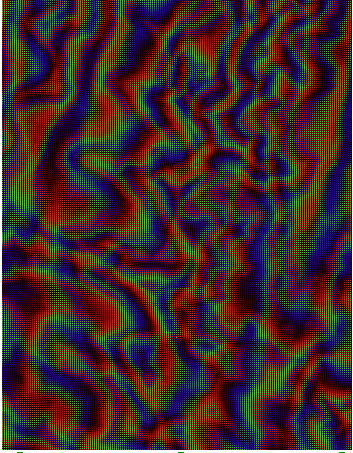

If your image data is in a nonstandard image format, you can use the READ_BINARY routine to read binary information from the file.
The following example reads byte data out of the file nyny.dat in IDL's examples/data subdirectory into an IDL variable named nyny.
The code shown below creates the graphic shown above. You can copy the entire block and paste it into the IDL command line to run it.
file = FILEPATH('nyny.dat', $
SUBDIRECTORY = ['examples', 'data'])
nyny = READ_BINARY(file, DATA_DIMS = [768, 512])
; Display the image using the IMAGE function
im = IMAGE(nyny)
Regular-grid data points are presented by two-dimensional arrays. The following example shows one way of importing and displaying this type of data. The 248-by-248 two-dimensional array contained within the convec.dat binary file in the examples/data directory is imported into IDL with the READ_BINARY function. The image function then displays this data as an image.
The code shown below creates the graphic shown above. You can copy the entire block and paste it into the IDL command line to run it.
; Define the data
file = FILEPATH('convec.dat', $
SUBDIRECTORY = ['examples', 'data'])
; Use READ_BINARY to specify data dimensions
data = READ_BINARY(file, DATA_DIMS = [248, 248])
; Use the IMAGE function to display the data
IM = IMAGE(data)
This example uses the surface.dat example data, which is elevation data from the Maroon Bells mountain range in Colorado, USA. This data is stored as integer data in a binary file.

The code shown below creates the graphic shown above. You can copy the entire block and paste it into the IDL command line to run it.
; Define the data.
file = FILEPATH('surface.dat', $
SUBDIRECTORY = ['examples', 'data'])
; Use READ_BINARY to specify data dimensions
mbells = READ_BINARY(file, DATA_DIMS = [350, 450])
; Use the IMAGE function to display the data
IM = IMAGE(mbells, rgb_table=6)
| • | RGB_TABLE - defines the color table used to display the image. If no color table is defined, this image displays in gray scale. |
| • | Change Graphics Properties |
| • | Multiple Graphics in One Window |
| • | Saving Graphics |
| • | IMAGE |
| • | READ_BINARY |
| • | Graphics |
| • | Formatting IDL Graphics Symbols and LinesSurface with Contour Lines |